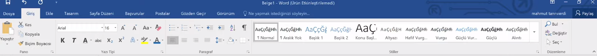
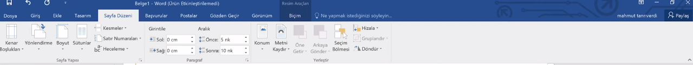
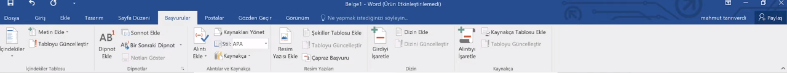
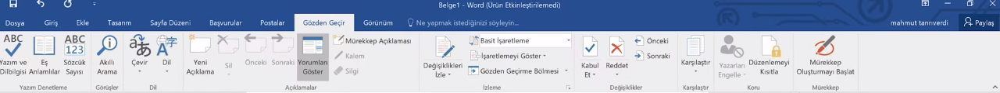

?? GIRIS SEKMESI - TUM DETAYLAR

?? PANO (CLIPBOARD)
Metin ve nesne tasima islemleri.
Yapistir (Paste)
Panoya kopyalanan son ogeyi imlecin oldugu yere ekler.
Kisayol: CTRL + V
Ozel Yapistir
Metni kaynagindan bagimsiz (sadece metin olarak) veya HTML/Resim olarak yapistirmaya olanak tanir.
Bicim Boyacisi
Bir metnin fontunu, rengini ve boyutunu kopyalayip baska bir metne hizla uygular.
Coklu kullanim icin butona cift tiklayin!
?? YAZI TIPI (FONT)
Karakter bazli bicimlendirme.
Kalin (Bold)
Metni belirginlestirir.
Ornek: Bu metin KALINLASTIRILMISTIR.
Italik (Italic)
Metni saga dogru eger.
Ornek: Bu metin EGIK yazilmistir.
Alt / Ust Simge
Kimyasal formuller (H²O) veya matematiksel uslu sayilar (x²) yazmak icindir.
Ornek: H2O veya 102
Yazi Tipi Boyutu
Metnin puntosunu ayarlar.
Ornek: 20 Punto
Tum Bicimlendirmeyi Temizle
Metne uygulanan tum renk, font ve stil islemlerini silip varsayilan sade metne donusturur.
?? PARAGRAF (PARAGRAPH)
Blok bazli hizalama ve listeleme.
Hizalamalar
Sola, Saga, Orta ve Iki Yana Yasla seçenekleri ile metin akisini duzenler.
Ornek: Bu saga yasli metindir.
Satir ve Paragraf Araligi
Satirlarin birbirine olan dikey mesafesini (1.0, 1.15, 1.5 vb.) ayarlar.
Goster/Gizle (¶)
Sayfadaki gizli bosluklari, sekme karakterlerini ve paragraf sonlarini gosterir. Hatalari gormek icin kritiktir.
??? STILLER (STYLES)
Otomatik bicim setleri.
Normal / Baslik Stilleri
Belgeye hiyerarsik yapi katar. Baslik stilleri kullanilmadan otomatik "Icindekiler Tablosu" olusturulamaz.
?? DUZENLEME (EDITING)
Belge icinde arama ve degisiklik.
Bul / Degistir
Belgedeki bir kelimeyi arar veya toplu halde baska bir kelimeyle degistirir.
Kisayol: CTRL + H (Degistir)
? EKLE SEKMESI - TUM DETAYLAR

?? SAYFALAR (PAGES)
Kapak Sayfasi
Belgenin en basina profesyonelce tasarlanmis bir kapak ekler. Yazar adi, tarih ve baslik alanlari hazir gelir.
Bos Sayfa
Imlecin oldugu yere aninda bos bir sayfa ekler.
Sayfa Sonu (Page Break)
Mevcut sayfayi o noktada bitirip metni bir sonraki sayfaya tasir.
Kisayol: CTRL + ENTER
?? TABLOLAR (TABLES)
Tablo Ekle
Satir ve sutun sayisini secerek veri tablolari olusturmanizi saglar.
Ornek Tablo Yapisi:
[ Ad | Soyad | Numara ]
[ Ad | Soyad | Numara ]
Excel Tablosu
Word icinde kucuk bir Excel hucresi acar; boylece toplama, carpma gibi formulleri kullanabilirsiniz.
??? CIZIMLER (ILLUSTRATIONS)
Resimler / Cevrimici Resimler
Bilgisayardan veya internetten (Bing uzerinden) gorsel ekler.
Sekiller (Shapes)
Ok, kare, daire veya yildiz gibi geometrik sekiller cizer.
Ornek: ? ¦ ? ?
SmartArt
Organizasyon semalari, surec diyagramlari veya hiyerarsik listeler olusturur.
Grafik (Chart)
Sutun, pasta veya cizgi grafiklerle verileri gorsellestirir.
?? BAGLANTILAR (LINKS)
Kopru (Hyperlink)
Bir metne týklandýðýnda web sitesine gitmesini veya belge icinde baska bir yere atlamasini saglar.
Ornek: www.google.com
Yer Isareti (Bookmark)
Belgenin belirli bir bolumune isim vererek oraya hizli ulasim saglar.
?? UST / ALT BILGI
Ustbilgi (Header)
Her sayfanin en ustunde otomatik olarak gorunen metindir (Orn: Kitap adi).
Sayfa Numarasi
Sayfalari otomatik olarak numaralandirir (1, 2, 3...).
?? METIN VE SIMGELER
Metin Kutusu
Sayfanin herhangi bir yerine tasinabilen bagimsiz bir yazi alani acar.
WordArt
Dekoratif ve sanatsal metin tasarimlari ekler.
Denklem (Equation)
Karmasik matematiksel formulleri yazmanizi saglar.
Ornek: E = mc²
Simge (Symbol)
Klavyede bulunmayan ozel karakterleri ekler.
Ornek: ©, ®, €, ?, ?
?? DUZEN SEKMESI - TUM DETAYLAR

?? SAYFA YAPISI (PAGE SETUP)
Kagidin fiziksel ozellikleri.
Kenar Bosluklari
Metnin sayfa kenarlarindan ne kadar iceride olacagini belirler.
Normal: 2.54 cm (Her yonden)
Dar: 1.27 cm
Dar: 1.27 cm
Yonlendirme (Orientation)
Sayfayi dikey (Portrait) veya yatay (Landscape) konuma getirir.
Ornek: Tablolar icin yatay, dilekceler icin dikey kullanilir.
Boyut (Size)
Yazdirilacak kagit turunu secer.
Standart: A4 (21cm x 29.7cm)
Diger: A3, Mektup (Letter), Zarf
Diger: A3, Mektup (Letter), Zarf
Sutunlar (Columns)
Metni gazete veya dergi formatinda dikey parcalara boler.
Ornek: Metni ikiye veya uce bolerek yer kazanin.
Kesmeler (Breaks)
Yeni bir sayfaya, sutuna veya bolume gecmek icin kullanilir. "Bolum Kesmesi" ile farkli sayfalara farkli kenar bosluklari atanabilir.
Satir Numaralari
Belgedeki her satirin yanina otomatik numara ekler. Hukuki belgelerde cok kullanilir.
Heceleme (Hyphenation)
Satir sonuna sigma yan kelimeleri tire (-) ile boler; boylece sag taraftaki bosluklari azaltir.
?? PARAGRAF (PARAGRAPH INDENT)
Bloklar arasi bosluklar.
Girinti (Indent)
Paragrafin sol veya sag kenar boslugunu ozel olarak artirir.
Sol Girinti: 1 cm (Metni saga iter)
Aralik (Spacing)
Paragraftan "Once" ve "Sonra" birakilacak boslugu ayarlar.
Orn: Paragraf sonrasina 12 nk bosluk koymak metni nefes aldirir.
?? YERLESTIR (ARRANGE)
Nesne ve resimlerin hiyerarsisi.
Metni Kaydir (Wrap Text)
Resmin metnin icinde mi, arkasinda mi yoksa ustunde mi duracagini belirler.
Sik kullanilan: Kare (Square) veya Metnin Onune.
One Getir / Arkaya Gonder
Ust uste binen resim veya sekillerin katman sirasini degistirir.
Hizala (Align)
Birden fazla nesneyi tam olarak ayni hizada tutar.
Dondur (Rotate)
Resmi veya sekli 90 derece saga/sola cevirir veya dikey/yatay yansitir.
?? BASVURULAR SEKMESI - TUM DETAYLAR

?? ICINDEKILER (TABLE OF CONTENTS)
Otomatik dizin olusturma.
Icindekiler Tablosu
Belgedeki "Baslik" stillerini tarayarak otomatik bir sayfa dizini olusturur.
Ornek:
Giris .......... 1
Gelisme ....... 5
Giris .......... 1
Gelisme ....... 5
Tabloyu Guncelle
Belgede sayfa numaralari veya basliklar degistiginde tabloyu tek tikla yeni verilere gore yeniler.
?? DIPNOTLAR (FOOTNOTES)
Sayfa ici aciklamalar.
Dipnot Ekle (Insert Footnote)
Sayfanin en altina kucuk bir not ekler. Teknik terimleri aciklamak icin kullanilir.
Kisayol: CTRL + ALT + F
Sonnot Ekle (Insert Endnote)
Aciklamayi sayfa altina degil, tum belgenin en son sayfasina ekler.
Sonraki Dipnot
Belgedeki dipnotlar arasinda hizla gecis yapmanizi saglar.
?? ATIFLAR VE KAYNAKCA
Alinti ve akademik kaynak yonetimi.
Alinti Ekle (Insert Citation)
Yazdiginiz bir bilginin hangi kitaptan veya yazardan alindigini belirtir.
Ornek: (Yilmaz, 2024)
Kaynaklari Yonet
Daha once eklediginiz tum kitap, makale ve web sitesi kaynaklarini duzenler veya yeni kaynak ekler.
Stil (Style)
Kaynakcanin yazim formatini degistirir.
Sik kullanilanlar: APA, MLA, IEEE.
Kaynakça (Bibliography)
Belgenin sonunda, kullanilan tum kaynaklari secilen stile gore alfabetik olarak listeler.
??? RESIM YAZILARI (CAPTIONS)
Gorsel ve tablo isimlendirme.
Resim Yazisi Ekle
Resim veya tablolarin altina otomatik numara ve isim verir.
Ornek: Sekil 1: Dunya Haritasi
Sekiller Tablosu Ekle
Belgedeki tum resimlerin, tablolarin veya grafiklerin sayfa numaralariyla birlikte listesini olusturur.
Capraz Basvuru
Metin icinde baska bir basliga veya tabloya link verir.
Ornek: (Bkz. Sekil 2, Sayfa 14)
?? DIZIN (INDEX)
Giris Isaretle
Onemli anahtar kelimeleri isaretleyerek belgenin en sonunda alfabetik bir "Dizin" (Index) olusturmanizi saglar.
?? POSTALAR SEKMESI - TUM DETAYLAR
Not: Bu sekme, bir veri kaynagi (Excel listesi gibi) ile Word belgesini birlestirerek toplu islem yapmanizi saglar.
?? OLUSTUR (CREATE)
Zarflar (Envelopes)
Gonderici ve alici adreslerini standart zarf boyutlarina gore konumlandirir ve dogrudan zarf uzerine yazdirmanizi saglar.
Etiketler (Labels)
Dosya klasorleri, kargo paketleri veya CD/DVD'ler icin yapiskanli etiket formatlari olusturur.
?? BIRLESTIRMEYI BASLAT
Adres Mektup Birlestirme
Ayni mektubu, listedeki her kisiye ismiyle hitap edecek sekilde cogaltma islemini baslatir.
Ornek: Mektup, E-posta, Zarf, Etiket veya Dizin.
Alicilari Sec
Veri kaynagini belirler. Yeni bir liste yazabilir, var olan bir Excel dosyasini kullanabilir veya Outlook kisilerini ice aktarabilirsiniz.
Ipuccu: Genelde Excel listeleri kullanilir.
?? ALANLARI YAZ VE EKLE
Adres Blogu
Alicinin adini, soyadini ve adresini belirli bir formatta otomatik olarak ekler.
Karsilama Satiri
Otomatik selamlama ekler.
Ornek: Sayin [Isim] [Soyisim],
Birlestirme Alani Ekle
Excel tablonuzdaki basliklari (Orn: Maas mikitari, Sehir) metnin istediginiz yerine yerlestirir.
? ONIZLEME VE BITIR
Sonuclari Onizle
Alanlarin (Orn: <>) yerine listedeki gercek verilerin nasil durdugunu gosterir. Kayitlar arasinda oklarla gezinebilirsiniz.
Hatalari Denetle
Birlestirme islemi sirasinda veri kaynaginda hata olup olmadigini test eder.
Birlestir ve Bitir
Islemi tamamlar. Tum mektuplari tek bir belgeye dokebilir veya dogrudan yaziciya/e-postaya gonderebilirsiniz.
?? GOZDEN GECIR SEKMESI - TUM DETAYLAR

?? YAZIM DENETLEME (PROOFING)
Hata ayiklama ve dil araclari.
Yazim ve Dil Bilgisi
Yazim hatalarini (kirmizi alt cizgi) ve dil bilgisi hatalarini (mavi alt cizgi) denetler ve oneriler sunar.
Kisayol: F7
Es Anlamlilar (Thesaurus)
Secili kelimenin yerine kullanilabilecek alternatif kelimeleri listeler. Kelime dagarcigini gelistirmek icindir.
Sozcuk Sayisi
Belgedeki toplam sayfa, kelime, karakter ve paragraf sayisini detayli bir rapor olarak sunar.
Odev veya makale sinirlari icin kritiktir.
?? DIL VE OKUMA
Cevir (Translate)
Secili metni veya tum belgeyi Microsoft Translator kullanarak baska bir dile cevirir.
Dil Sec (Language)
Yazim denetiminin hangi dilde yapilacagini belirler (Orn: Ingilizce metin yazarken Ingilizce denetimi secmek).
Sesli Oku (Read Aloud)
Metni yapay zeka sesiyle sesli olarak okur. Gozden kacirilan hatalari duymak icin harikadir.
?? YORUMLAR (COMMENTS)
Geri bildirim ve notlar.
Yeni Yorum
Metnin yanina kucuk bir not balonu ekler. Belgeyi degistirmeden geri bildirim vermeyi saglar.
Yorumlari Goster
Belgedeki tum yorumlari saga acilan bir panelde listeler.
??? IZLEME (TRACKING)
Ortak calisma takibi.
Degisiklikleri Izle
Aktif edildiginde, belgede yapilan her silme ve ekleme islemi renkli olarak isaretlenir. Kimin neyi degistirdigi gorunur.
Kabul Et / Reddet
Izleme modunda yapilan degisiklikleri onaylayarak belgeye kalici olarak isler veya reddederek eski haline dondurur.
Karsilastir (Compare)
Bir belgenin iki farkli surumunu yan yana getirir ve aradaki farklari otomatik olarak bulur.
?? KORU (PROTECT)
Duzenlemeyi Kisitla
Baskalarinin belgede degisiklik yapmasini engeller. Sadece belirli alanlarin degistirilmesine veya sadece yorum yapilmasina izin verilebilir.